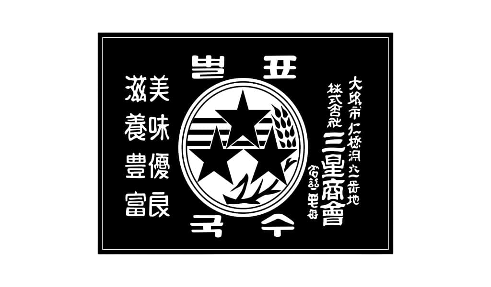
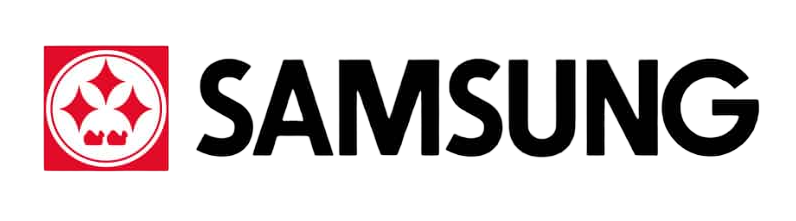
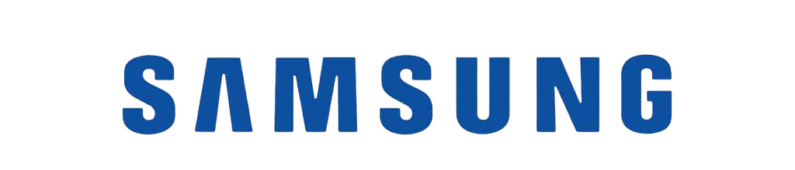

Tudo aquilo que você sempre quis saber sobre o mundo Tech em um unico lugar
Historia do logotipo da Samsung
Samsung ser uma das Big Techs do Mercado de Tecnologia, não é exatamente uma grande surpresa porem você conhece a historia do seu logotipo? Logo abaixo estaremos contando um pouco sobre ela junto com curiosidades sobre a tão famosa empresa
De comida para Tecnologia
Em seus anos iniciais a Samsung não era uma Big tech de tecnologia, para a surpresa de muitos ela foi fundada inicialmente para a exportação de alimentos como peixe seco, macarrão e arroz para os vizinhos como a China. É dificil dizer com exatidão o verdadeiro significado da logo presente nos pacotes de macarrão porem a "Certeza" é que as tres estrelas presentes na logo em preto e branco era uma referencia direta aos filhos do fundador ou ate mesmo ao sucesso que o destino guardava para eles

Segunda Guerra Mundial e 1960
Que a Segunda Guerra Mundial acertou em cheio a economia global não é exatamente uma novidade porem a Coreia do Sul foi uma das grandes afetadas com essa crise economia forçando a dividir a economia do seu país em diversas empresas dependendo de cada ramo deixando nas mãos da Samsung a tecnologia. Na epoca foram sutis as mudanças na logo, as mudanças realmente notaveis vieram apenas em 1960 quando as Tvs tiveram o BOOM das cores.

Tempos Atuais
Atualmente a Samsung tem a classica logo com a forma Oval em seu fundo e as letras reconheciveis no mundo todo, tanto que a forma Oval muitas vezes não esta presente afinal quem coloca os olhos na escrita ja consegue ter em sua mente a imagem daquela classica logo. Abaixo esta uma comparação entre 1980 e os anos atuais da logo.

Então é isso! Finalizamos por aqui nossas curiosidades e um pouco da historia da logo da Samsung, é interresante saber que a empresa fundada por Lee Byung-chul conhecida "Apenas" pelos seus grandes celulares guarda tantos segredos em sua historia assim ne?